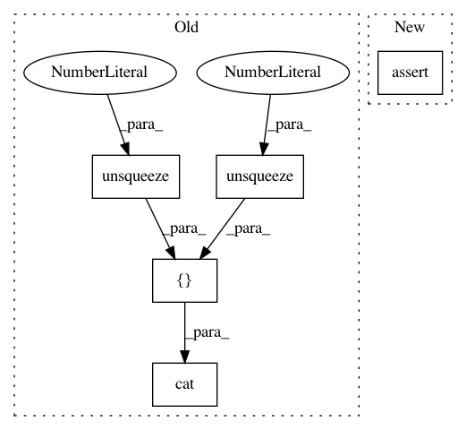

91b0d220c8e816766fd4565e1d2f5115d3afbefe,test/functions/test_inv_quad_log_det.py,TestInvQuadLogDetBatch,test_inv_quad_log_det_many_vectors,#TestInvQuadLogDetBatch#,130
Before Change
.sum(2)
.sum(1)
)
actual_log_det = torch.cat(
[self.mats_var_clone[0].det().log().unsqueeze(0), self.mats_var_clone[1].det().log().unsqueeze(0)]
)
with gpytorch.settings.num_trace_samples(1000):
nlv = NonLazyTensor(self.mats_var)
res_inv_quad, res_log_det = nlv.inv_quad_log_det(inv_quad_rhs=self.vecs_var, log_det=True)
self.assertTrue(approx_equal(res_inv_quad, actual_inv_quad, epsilon=1e-1))
After Change
res_inv_quad, res_log_det = non_lazy_tsr.inv_quad_log_det(inv_quad_rhs=self.vecs, log_det=True)
self.assertEqual(res_inv_quad.shape, actual_inv_quad.shape)
self.assertEqual(res_log_det.shape, actual_log_det.shape)
self.assertLess(torch.max((res_inv_quad - actual_inv_quad).abs()).item(), 1e-1)
self.assertLess(torch.max((res_log_det - actual_log_det).abs()).item(), 1e-1)
// Backward
In pattern: SUPERPATTERN
Frequency: 3
Non-data size: 5
Instances
Project Name: cornellius-gp/gpytorch
Commit Name: 91b0d220c8e816766fd4565e1d2f5115d3afbefe
Time: 2018-10-12
Author: gpleiss@gmail.com
File Name: test/functions/test_inv_quad_log_det.py
Class Name: TestInvQuadLogDetBatch
Method Name: test_inv_quad_log_det_many_vectors
Project Name: cornellius-gp/gpytorch
Commit Name: 91b0d220c8e816766fd4565e1d2f5115d3afbefe
Time: 2018-10-12
Author: gpleiss@gmail.com
File Name: test/functions/test_inv_quad_log_det.py
Class Name: TestInvQuadLogDetBatch
Method Name: test_inv_quad_only_many_vectors
Project Name: cornellius-gp/gpytorch
Commit Name: 91b0d220c8e816766fd4565e1d2f5115d3afbefe
Time: 2018-10-12
Author: gpleiss@gmail.com
File Name: test/functions/test_inv_quad_log_det.py
Class Name: TestInvQuadLogDetBatch
Method Name: test_log_det_only